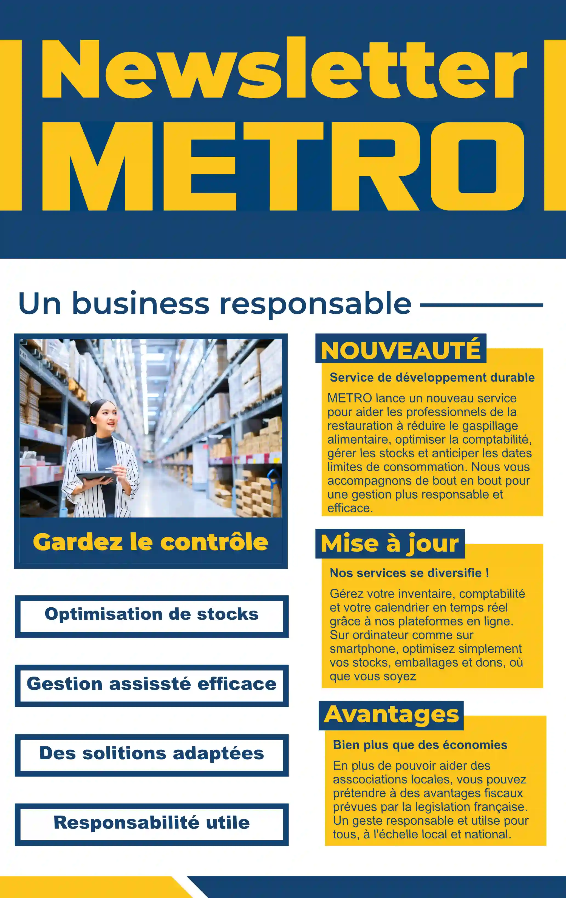
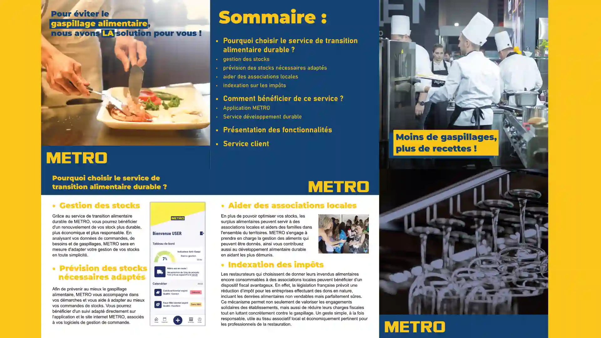

Projet pédagogique à l'attentions de professionnels.


Similaire au Marathon annuel, le Hackathon permet de mettre à contribution toutes les spécialisations de l'IUT de Béziers pour aider les entreprises (restaurants, café, bar). Ici, METRO Béziers
En tant que communiquant aguérit, j'ai proposé 2 supports de communications servant d'instructions au nouveau service de METRO Béziers : Un gestionnaire des stocks, une application servant aux clients leurs stocks, leurs utilisations et surtout de prévenir le gaspillage en proposant une estimation personnalisé de certains produits. Les avantages devait aussi être misent en avant, comme les déductions fiscales, l'économie sur les stocks à l'année, ou encore la redistribution de la nourriture invendue à des associations.
Notre sérieux, notre motivation et les échanges fréquent avec le commenditaire nous ont permit de cerner au mieux les attentes des usagers et nous a permit de gagner le prix de la faisabilité pour le Hackaton 2026 de Béziers.